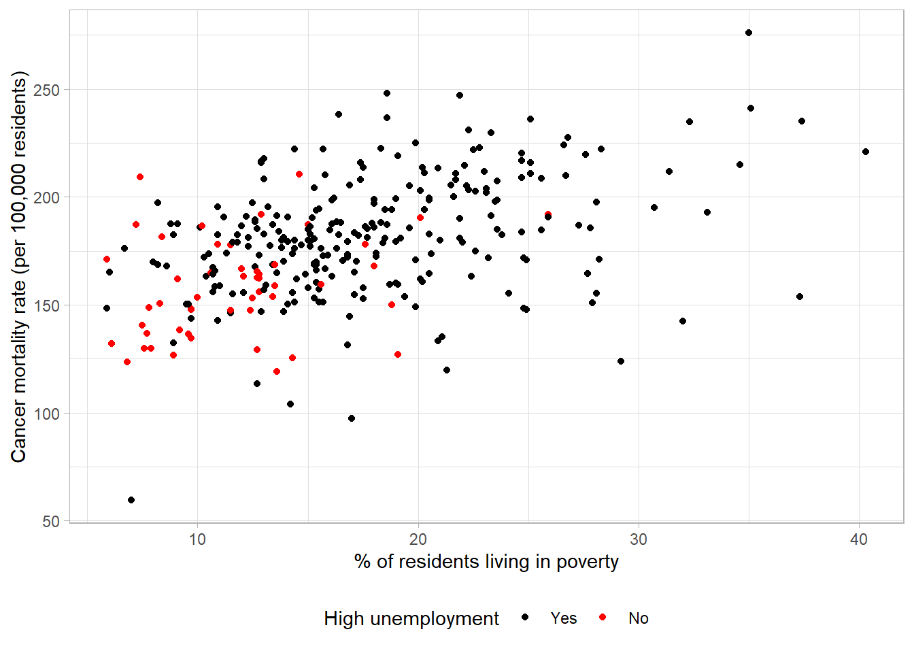
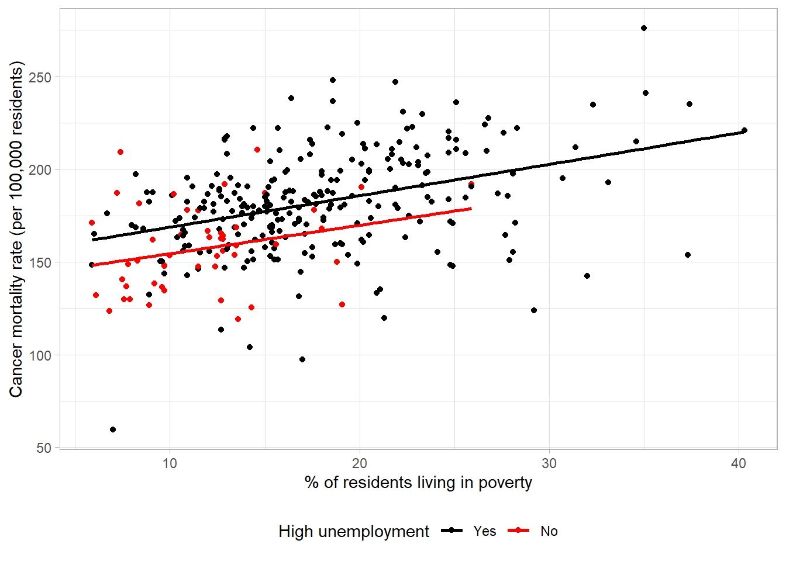

2 Data visualisation
Data visualisation is a powerful tool with multiple important uses. First, visualisations allow us to explore the data, identify potential outliers and errors, or check that the variables behave in the way we would expect them to if they have been recorded correctly. Visualisations can also be used as an analysis tool, allowing us to identify trends in the data or differences between groups. Finally, visualisations can help to convey messages to an audience in a clear, concise way that is often more powerful than presenting them using numbers or text. In some cases, data visualisations can show results so clearly that further analysis is arguably unnecessary.
A gruesome example of this was found after the arrest of Harold Shipman, one of Britain’s most prolific serial killers. Harold Shipman was convicted of murdering hundreds of his mostly elderly patients with an overdose of opiates, often administered in their homes. After his conviction, investigators questioned whether he could have been caught earlier. The visualisation below shows the time at which patients died who were registered at other local GP surgeries against the time of death for those who saw Harold Shipman. The difference is so stark that it can be argued that no formal statistical analysis would be required to confirm this.
Often, trends and differences in data will not be so obvious, but it is important to understand which data visualisations can be useful in different settings. This section will introduce some of the most common data visualisations, provide examples of these using real data, and highlight important characteristics of each visualisations, as well as potential flaws to be aware of. Throughout the section, we will consider principles of data visualisation that must be followed to ensure they are informative, compelling, truthful, and accessible.
2.1 Choosing the most appropriate visualisation
The most appropriate choice of visualisation will depend on the type of variable(s) we wish to display, the number of variables and the message we are trying to disseminate. Common plots used to display combinations of different types of data are given in following table:
Number of variables | Type of variables | Visualisation |
|---|---|---|
One variable | Categorical | Frequency table |
Bar chart | ||
Numerical | Histogram | |
Spatial | Map | |
Temporal | Line plot | |
Two variables | Two categorical | Frequency table |
Stacked/side-by-side bar chart | ||
One numeric, one categorical | Dot plot | |
Box plot | ||
Two numerical | Scatterplot | |
> 2 variables | > 2 categorical | Table |
2 numeric, one categorical | Scatterplot with different |
Tip
This list of common visualisations is far from comprehensive. If you would like a list of more options, including some non-standard graphs, visit the From Data to Viz website.
2.2 Visualising a single, numeric variable
Histograms are a common data visualisation method for a single numeric variable. Histograms consist of bars that show the number of observations in a sample that lie within a numeric range: the higher the bar, the more common those values are. They are used to check the distribution (or shape) of variables, and are useful to identify outliers and potential errors in the data. The distribution we are most often checking for is the normal distribution, also known as a bell-shaped curve, which occurs naturally in many variables and is a common assumption for many statistical methods.
A normal distribution is characterised by a single peak in the centre of the histogram, also known as the average or mean. The histogram will then have two symmetric tails that show more ‘extreme’ values become less common as they are further from the average:
The histogram below shows the settlement funding assessment (SFA) for each local authority in England in 2015 given in millions of pounds:
The first thing we can see from this histogram is that it is clearly not a normal distribution. The peak of the sample distribution is close to 0, and there is a very long upper tail which is not symmetrical to a lower tail. Another important thing to note is the presence of outliers. Most local authorities had an SFA of approximately £300 million or less. There are two observations that have values much larger than this which must be investigated.
The highest value on the histogram represents the Greater London Authority with an SFA of £1,163 million, the second is from Birmingham with an SFA of £612 million. Observations should only be removed from a sample if they should not be included in an analysis. The Greater London Authority is a collection of smaller local authorities that are already in the dataset. This value must be removed before any further analysis is carried out to avoid duplicating observations. However, the Birmingham observation represents a single local authority that has a large value because it covers a large population. The Birmingham observation should not be removed from the analysis as it is not an error, but we should make a note that there is an outlier in the SFA variable as this could influence certain results if further statistical analysis is carried out on this data.
The updated histogram, without the Greater London Authority duplicate, is given below. Notice that the x axis limits have changed:

When the objective of a histogram is to check the distribution of a numerical variable, a density curve can be added to the histogram which aims to smooth the bars into a continuous curve. These curves are usually easier to compare to a distribution of interest:
The density line is far from symmetric, indicating a skewed distribution. A skewed (non-normal) continuous variable is not a sign of an error. In this example, a highly skewed variable is to be expected. The majority of local authorities in England consist of small populations with a minority representing large cities (for example, the Birmingham local authority identified above) with much higher spending.
As with all data visualisations, it is important to ensure that a histogram is showing the data in the clearest way. Histograms’ appearances are heavily influenced by the width of the bars (sometimes referred to as ‘bins’) shown on the plot. The number of bars on a histogram must be large enough to detect important trends and peaks in the data, but not so large that the shape becomes overwhelming and difficult to interpret.
Figures Figure 2.1 - Figure 2.3 have 30 bars (the default set by some statistical software packages). When we reduce the number of bars to 15, the curve becomes smoother but the dip in distribution at around £50 million is no longer visible:
If the number of bars is increased to 100, we can see there are many small peaks in the data that we were not able to see with wider bars, however the overall distribution of the data becomes more difficult to interpret:
When creating histograms, it is important to try different numbers of bars to ensure that important trends are not missed. When interpreting histograms, we must keep in mind that a very small number of bars may be hiding something.
2.3 Visualisations to compare numeric variables between groups
Although histograms are useful to visualise the distribution of a numeric variable across a whole sample, we often want to compare a variable between groups. The choice of visualisation will depend on which aspect of the numeric variable we are interested in comparing, for example the entire distribution or some kind of summary of the groups. In this section, we will compare the settlement funding assessment (SFA) of local authorities in England in 2015 from the previous section between regions, using visualisations that show an increasing amount of information.
2.3.1 Bar chart of averages
The simplest, least informative comparison of SFA between regions would be to show the average of each group. This can be done using a bar chart which will consist of a bar per region. The length of each bar will represent the average SFA for the region it represents. The most common choice of average for charts of this sort is the mean. We shall discuss in later sections why this may not be the most appropriate choice.

This bar chart shows that local authorities in London had the highest SFA on average, while the East Midlands and South East had the lowest. The chart is clear and easily interpretable but is missing a considerable amount of information. In particular, the chart does not give any information about the spread of values in each group. Although the group averages look different, there is likely overlap in values in each of the groups.
2.3.2 Box plot
A common visualisation to compare average values across groups, whilst also showing measure of spread, is a boxplot. Boxplots contain a measure of the centre of each group, given by the median, surrounded by a box with limits defined by the interquartile range (IQR). The IQR is the difference between the 75th percentile (the value below which 75% of the sample lies) and the 25th percentile (the value below which 25% of the sample lies), giving the range of the middle 50% of the sample. The box has whiskers attached that give the range excluding outlier, and outliers are highlighted as points on the plot. The definition of outlier differs across software, however a common definition used for the boxplot below is any observation that lies further than 1.5 times the IQR from the box.
This boxplot shows far more information than the bar chart of averages. We can clearly see the outlier which was identified earlier as Birmingham. We can also see that, although London has the highest average SFA, there is quite a large overlap of values with other regions. The East Midlands, East England, and South East regions had a large number of outliers and a very small IQR which should be investigated further.
The dataset shows that the many outliers are not errors, these regions consist mostly of very small local authorities with very low spending and few towns and cities that have substantially higher spending. Therefore, any larger areas in these regions will appear as outliers compared to the very small local authorities.
2.3.3 Violin plot
We gain more information from the box plot compared to the bar chart but we are still losing a lot of information by only showing summary measures. We can see the range of the middle 50% but we are not able to see how those values are distributed. Violin plots show the density of groups, similar to the density curve added to the histogram previously but rotated 90 degrees. Violin plots show the full sample and are particularly useful where a distribution does not have a single peak (which is assumed by box plots).
One benefit of this violin plot compared to the boxplot is that we can see the very bottom-heavy distribution of SFA in the East Midlands, East England and South East regions which explains the large number of outliers in the boxplots. However, the violin plot of SFA per region is difficult to interpret with so many regions.
2.3.4 Dot plot
As violin plots are produced using density estimates from the data, they are still not giving all information from the sample. They are also not very useful where there are long-tailed distributions, as we can see in the West Midlands region in the previous plot, as they can give the illusion of data existing where it does not (between the outlier and the rest of the group). To overcome these issues, we can show every observation in the sample as points, separated into groups, in a dot plot. Dot plots have the same axes layout as the previous plots, with grouping on the x axis and the numeric variable on the y-axis.
Without checking, this dot plot appears to show every local authority’s SFA grouped by region. However, there are many local authorities that have very similar SFA values that can not be seen as they are currently lying on top of one another. To overcome this, a dot plot can be adapted by spreading the points out along the x-axis, also known as jittering:

By jittering the points, we can now see the differences in the distribution of points in each region. The outlier of Birmingham is clearly visible, as are the bottom-heavy distributions of some regions. We can clearly see the differences in the number of observations in each region. For example, it is clear that the North East region has less local authorities and less variability compared to other regions. One thing that is not clear from this dot plot that was clear from previous plots, is that the London region had the highest average SFA.
2.3.5 Multi-layer plots
Sometimes a single choice of plot will not be enough and multiple visualisations are needed. In this case, we may wish to express the differences in summary statistics between regions, without losing information about the overall distribution and density of the sample. One solution would be to provide a boxplot with points added as an extra layer to the plot:
This final plot clearly shows the differences in the average SFA between regions, the outlier in the West Midlands region (Birmingham), and the differences in the shapes of distributions between regions. Although we have added an extra layer to each plot, the message of both is still clear and easily interpretable.
Warning
Show as much relevant data as possible, maximising the amount of information given in the smallest amount of space. This does not mean showing all of the data. Overloading a plot can lead to confusion. Adding too many layers to the same visualisation can make it less informative, hiding important messages.
2.4 Visualising a single, categorical variable
Visualising categorical variables involves describing their distribution between categories. This can be done using counts or the proportion of observations in each group.
2.4.1 Frequency table
Both counts and proportions/percentages can be displayed using frequency tables. For example, the number of recorded crimes in the East Midlands in 2023, categorised by police force:
Area name | Total recorded crimes | Percentage of total crimes |
|---|---|---|
Derbyshire | 90,181 | 21.51 % |
Leicestershire | 103,806 | 24.76 % |
Lincolnshire | 57,234 | 13.65 % |
Northamptonshire | 62,116 | 14.82 % |
Nottinghamshire | 105,899 | 25.26 % |
Frequency tables can provide a lot of information and, where there are not many categories, can be easy to interpret. However, they can quickly become overwhelming when there are many categories displayed, patterns in the data can be harder to spot, and they can look boring.
2.4.2 Bar chart
The same data can be displayed using a bar chart, the categorical equivalent of a histogram, where the length of each bar represents the number of observations in the category:
Although this bar chart is also not particularly interesting, our eyes are immediately drawn to the differences between groups. We can immediately see that Lincolnshire and Northamptonshire had fewer recorded crimes than the other police force areas, and that Leicestershire and Nottinghamshire had the highest number of recorded crimes and were at a similar level.
Bar charts can be formatted to draw attention to important results, for example by ordering the bars from largest to smallest frequencies to highlight the differences in groups (note that this is only appropriate where there is no ordering to the groups):
Colours can also be used to emphasise groups that are of interest to the audience. For example, if this graph was displayed as part of an investigation into crime levels in Derbyshire, we could change the colour of this bar to draw attention to it:
Tip
Characteristics such as colours that naturally draw people’s attention within a visualisation are known as preattentive attributes. There are several categories of preattentive attributes that can be used to make important messages clearer:
- Spatial attributes (e.g. spatial grouping, enclosure, length, and width),
- Colour attributes (including differences in colour hue or intensity),
- Attributes of form (including size and shape).
We can also swap the axes so that the bars run horizontally and the frequencies are shown on the x axis. This can sometimes make the ordering and length of the bars easier to read, or can make the graph more compact where the group labels are long:
When creating or interpreting visualisations, we want to ensure the information being shown is not misleading or distorted in any way. One way to avoid misleading readers is to follow the principle of proportional ink. This means that the amount of ink used in a visualisation should be proportional to the quantities it is representing. A common example of a violation in this principle is where a bar chart’s x-axis does not begin at 0. The differences in the lengths of bars is no longer representative of the differences between groups, leading to a distortion in the message.
For example, using the recorded crime data, we could set the frequency axis to begin at 50,000 as all counts were higher than this:
Although the plot shows the same information as the others, the smaller counts appear much smaller than the original plot and the difference between the highest and lowest values is more pronounced. Although this plot is showing the same information, this small change has affected how our brains interpret the results.
2.4.3 Pie chart
An alternative approach to summarising and visualising categorical variables is to use proportions. One benefit of considering proportions as opposed to the counts is that they allow us to take account of the sample size and put counts into context. Proportions of a single sample can be visualised using a pie chart. Each ‘slice’ of the pie represents a category and the size of the slice represents the proportion of the sample that lies within that group.
For example, a pie chart can be used to display the same data as Figure 2.12 but with each area given as a proportion of the whole region:
Although Figure 2.17 shows the same data as Figure 2.12, it is harder to compare the groups as the proportions are quite similar. One possible solution to this issue is to add labels with the values onto each slice:
Warning
Research shows that people’s perception of dots, lines and bars are more accurate than distinguishing between angles, proportions and colour hues. This is why pie charts, are harder to interpret than bar charts, particularly where differences between groups are small.
Pie charts are generally discouraged because they are more difficult to interpret than bar charts or frequency tables. If pie charts are used, annotations such as the labels in Figure 2.18 should be used to avoid misinterpretation.
2.5 Visualisations to compare categorical variables between groups
Bar charts introduced in the previous section can be extended to include a further grouping variable and used to compare the distribution of observations between categories across groups. Stacked bar charts are used to compare the proportion of observations in different categories across groups, whereas side-by-side bar charts compare counts.
2.5.1 Stacked bar chart
A stacked bar chart is useful where the total number in each group is important, as well as the distribution of these groups between categories. As with a standard bar chart, the total number of observations in each group determines the length of the bar. These bars consist of multiple smaller bars that represent the number of observations in each category.
For example, using the data from the previous section, we can compare the overall number of recorded crimes, as well as the different types of crimes, between police forces in the East Midlands:
This bar chart clearly shows that Nottinghamshire and Leicestershire had the highest recorded crimes, and Lincolnshire and Northamptonshire had the lowest, which we had already seen previously. In addition to the findings from the previous bar charts, we can now see that the largest proportion of crimes across all police forces were violent crimes and theft. The distribution across types of crimes seems similar between police forces. If the distribution between the types of crimes is more important than comparing the total number per police force, we may also consider a proportion stacked bar chart.
2.5.2 Proportion stacked bar chart
Proportion stacked bar charts are an alternative to the stacked bar chart which compares the proportion of each group that lie in different categories. The length of each bar is equal to 1 (representing the whole group size), and consists of smaller bars representing the proportion of the group in a category. These are particularly useful when differences in group sizes are not important, but the relative distributions between groups are.
The proportion bar chart confirms that the distribution of different crime types is similar across police forces, regardless of the total number of crimes.
2.5.3 Side-by-side bar chart
Side-by-side bar charts allow us to compare the number of observations in each category between groups. The smaller bars that make up a stacked bar chart are placed next to one another, meaning the length of bars now represents the total observations per category per group. They are useful when comparison of the overall total of groups is not important, and where there is a small number of groups and/or categories to compare between.
The previous example would require 45 bars in total (9 bars for each of the 5 police forces). This would be almost impossible to show clearly on one axis, so for this example, we will compare the three most common types of crime between forces: violent, theft, and public order.
All three bar charts show the same information in different formats. The most appropriate choice of these would depend on the motivation behind the plot. For example, are we interested in comparing the overall total crimes between regions? In which case, a stacked bar chart would be most useful. Would we prefer to compare the distribution of the different types of crimes between regions? Then a proportional stacked bar chart might be helpful. Or is the intention of the plot to compare the total of a certain type of crimes between regions, rather than the overall total? Then a side-by-side bar chart would be most appropriate.
2.6 Visualisations for two or more numeric variables
Visualising single variables is important when checking the data for errors and distributions. However, we often want to investigate relationships between multiple variables in a dataset. When exploring the relationship between two numeric variables, we should consider a scatterplot. One of the numeric variables is displayed on the vertical, or y-axis (often the outcome of interest or dependent variable), and the other is displayed on the horizontal, or x-axis (usually the explanatory variable). Each observation is represented with a point on the graph area.
Scatterplots are useful to explore the data and identify outliers/errors which may not be as clearly visible in univariate plots. Scatterplots are also useful to generate hypotheses about the relationship between variables. For example, whether they are positive or negative.They can also explore the nature of relationships in terms of whether they are linear or not, which is a requirement of some statistical methods.
The scatterplot below shows the relationship between cancer mortality in US counties in 2015 and the level of poverty in these counties. Cancer mortality rate has been given on the y-axis as this is the outcome of interest which we think may be dependent on poverty (the explanatory variable):
The scatterplot shows there are no unexpected outliers, and there appears to be a positive linear relationship between these variables. That is, as the percentage of the population living in poverty increases, the cancer mortality appears to increase on average. Note that we are not making inferences about the total population, nor are inferring causation from this graph.
This potential relationship can be made clearer by adding a line of best fit to the scatterplot. There are different methods of estimating a line of best fit, the most common being a linear model. Linear models produce a line that minimises the difference between each point and the line drawn. Alternative methods are available where a linear relationship is not appropriate.
Adding a line of best fit to Figure 2.21 highlights the positive association between poverty rate and cancer mortality. Although the line does not fit the data perfectly, it gives an estimation of the direction and magnitude of this relationship which can be investigated formally using statistical analysis.
Scatterplots can be extended to show additional variables by changing the appearance of points. Categorical variables can be added using a difference colour or symbol for each group:

Unemployment level has been added to the plot using different colours, with the key given in the legend. On average, areas with high unemployment appeared to have higher levels of poverty and cancer mortality. We would expect unemployment and poverty level to be highly related and, given that higher levels of poverty appeared to be associated with higher mortality, also related to higher cancer mortality rates.
If we believed that the relationship between the variables given on the x- and y-axes differed between groups, we could also provide a line of best fit per group rather than for the sample as a whole:

The lines of best fit have approximately the same gradient, indicating that the relationship between poverty and cancer mortality is approximately equal. However, the line for high unemployment is consistently higher than the other group which shows this group had a higher mortality rate on average at different poverty levels.
Numeric variables can also be added to scatterplots by adjusting the colour or size of the points based on each observations’ value. For example, the average age of each county could be added using a sequential colour scheme:
The relationship between age, poverty and cancer mortality is hard to decipher as most counties have similar average ages which is not obvious with a continuous colour palette.
Warning
When choosing a colour palette, be sure that all colours are distinct to everyone, including those with colour-vision deficiencies. To help check this is the case, use a colour blindness simulator to see what a visualisation looks like under different types of colour blindness.
For continuous data avoid cyclical palettes, such as the rainbow palette, to avoid confusion between high and low values.

Additional variables should only be included in data visualisations where they are needed and where they do not confuse the original message. Overloading a visualisation can make it hard to interpret and lose information. In some cases, it is better to have multiple, simple (but clear) plots rather than a single, complex plot.
2.7 Visualising temporal data
Where a variable has been measured repeatedly over time, we want to ensure that any visualisation makes it clear that these observations are related. The most common visualisation used for temporal data is a line graph. Line graphs have the measure of time along the x-axis and the variable measured over time on the y-axis. Each observation’s values are connected over time using a line. Line graphs are useful to explore trends over time, for example whether values have been increasing or decreasing.

This line graph shows the number of violent crimes recorded in England between 2010 and 2020. From this simple graph, we can clearly see that there is a strong, downward trend. That is, the number of violent crimes recorded has decreased over the 10-year period.
Line graphs are not only useful at determining overall trends but also checking the data for inconsistencies. For example, all years experienced a decrease in recorded crimes apart from 2014 - 2015 where there was an increase. We could go back and check the source of the data, make a note of potential reasons for this difference, and be sure to communicate this as part of our interpretation.
Line graphs can be used to compare trends between different groups by adding multiple lines to the same graph. For example, the following graph shows the number of magistrate court cases, by type, between 2012 and 2023. Each case type has a different coloured line, and the interactions between lines are clear:
This line graph is the perfect example of where a visualisation is more powerful than simply writing results in a table of texts. The drastic drop of disposals due to closure of magistrates courts during the COVID-19 pandemic is stark. This is coupled with the vast increase of outstanding cases which we can see has not returned to pre-COVID levels. This can be explained by the other lines on the graph as we can see that the number of receipts are almost back to previous levels, whereas the number of disposals has still not quite recovered.